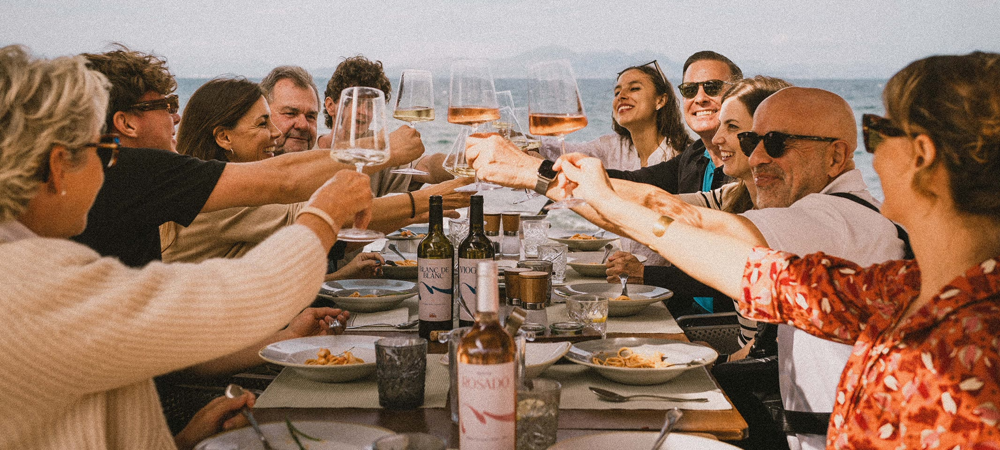

Kunden- und Mitarbeiterbefragungen
Eure Marke lebt nicht nur von Strategie und Design, sondern auch davon, wie sie wahrgenommen wird, nach außen von Kund:innen und nach innen von Mitarbeitenden. Befragungen sind ein Werkzeug, um diese Perspektiven sichtbar zu machen, klar, ehrlich und oft mit überraschenden Einsichten.
Warum sind sie wichtig?
Kunden- und Mitarbeiterbefragungen sind mehr als nur Feedback, sie sind strategische Impulse. Sie helfen dabei:
- Markenwahrnehmung zu überprüfen: Stimmen Strategie und Realität überein?
- Employer Branding zu stärken: Mitarbeitende fühlen sich gehört und einbezogen.
- Veränderungen glaubwürdig zu machen: Die Organisation zeigt, dass sie zuhört, bevor sie handelt.
Gerade bei etablierten Unternehmen sind Befragungen ein wichtiger Schritt, um alte Muster zu durchbrechen und Akzeptanz für Neues zu schaffen. Sie können sogar ein politisches Signal sein: Wir nehmen die Stimmen ernst und bauen Veränderung gemeinsam.
Mitarbeiterbefragungen in der Praxis
Ein konkretes Beispiel unserer Arbeit.
 Gesundheit & CareZuhören, Muster erkennen und das gemeinsame WIR verstehen.
Gesundheit & CareZuhören, Muster erkennen und das gemeinsame WIR verstehen.LINK ORTHO
 Architektur, Immobilien & RäumeKunden- und Mitarbeiterbefragungen als Teil der Markenarbeit für BGF+ Architekten.
Architektur, Immobilien & RäumeKunden- und Mitarbeiterbefragungen als Teil der Markenarbeit für BGF+ Architekten.BGF+ Architekten

Food, Beverage & HospitalityKunden- und Mitarbeiterbefragungen als Teil der Markenarbeit für CA'N SORT.CA'N SORT
- Food, Beverage & HospitalityKunden- und Mitarbeiterbefragungen als Teil der Markenarbeit für Little Big Pasta.
Little Big Pasta
 Finance & Professional ServicesKunden- und Mitarbeiterbefragungen als Teil der Markenarbeit für MDB Finance.
Finance & Professional ServicesKunden- und Mitarbeiterbefragungen als Teil der Markenarbeit für MDB Finance.MDB Finance
Was sind Kunden- und Mitarbeiterbefragungen?
Befragungen liefern ein direktes Stimmungsbild von den Menschen, die täglich mit eurer Marke zu tun haben. Sie können schriftlich, telefonisch oder in persönlichen Interviews stattfinden, offen oder anonym. Je nach Ziel lassen sich ganz unterschiedliche Facetten erfassen: von der Markenwahrnehmung über konkrete Verbesserungspotenziale bis hin zu Fragen rund ums Employer Branding.
Wie wir arbeiten
Wir entwickeln mit euch ein passendes Format: von Online-Fragebögen bis zu tiefgehenden Interviews. Gemeinsam definieren wir die Fragen, die wirklich weiterbringen, und sorgen für eine Auswertung, die klar zeigt, wo Chancen und Risiken liegen. Am Ende stehen keine Rohdaten, sondern handlungsrelevante Erkenntnisse, die in die Markenstrategie oder das Employer Branding einfließen.
Fragen, die uns immer wieder gestellt werden
- Wie anonym können Befragungen gestaltet werden?
- Wie verhindern wir, dass es nur eine Pflichtübung wird?
- Wie übersetzen wir die Ergebnisse in konkrete Maßnahmen?

„Verstehen beginnt mit Zuhören. Befragungen sind kein Kontrollinstrument, sondern die Chance, Perspektiven einzubeziehen, ehrlich, direkt, wertvoll.“

Nächster Schritt
Lasst uns sprechen und loslegen.

Erzählt uns nicht nur, welchen grafischen Output ihr sucht. Zeigt uns, was im Unternehmen passieren soll, und woran ihr merkt, dass die Marke noch nicht mitkommt.
Projekt anfragen